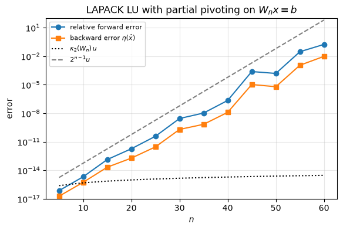
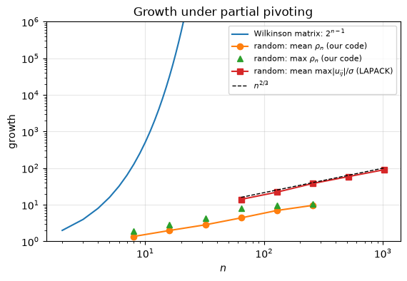
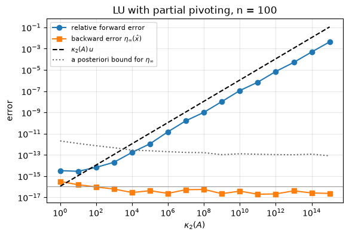
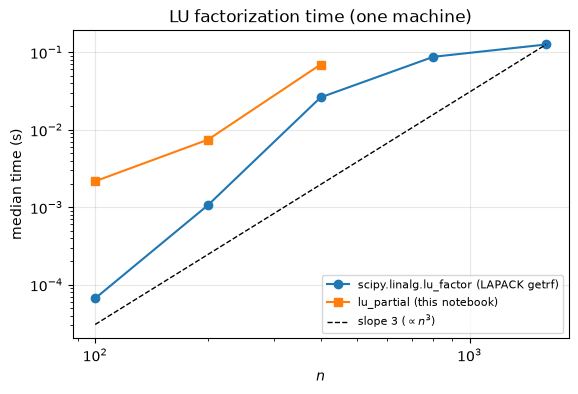

5.11. Lab 5: Gaussian elimination and LU factorization#
This notebook accompanies Chapter 5 of the notes. Every experiment checks a statement from the chapter numerically.
Learning objectives. After working through this lab you should be able to
implement forward and back substitution and verify their componentwise backward stability;
implement LU factorization without pivoting and with partial pivoting using vectorized rank-one updates, and handle an exactly zero pivot correctly;
verify a factorization against
scipy.linalg.luwith the correct residual \(\|A - PLU\|\) and with the bound \(|\Delta A|\le\gamma_n|L||U|\);reproduce the failure of unpivoted elimination caused by a small pivot;
measure growth factors on random matrices and on the Wilkinson matrix, and explain what each experiment does and does not show;
compare backward error, forward error and \(\kappa(A)u\) for LU with partial pivoting;
use
lu_factorandlu_solveefficiently and explain why one never forms \(A^{-1}\) to solve a system.
Run the cells in order from a fresh kernel.
import time
import warnings
import matplotlib.pyplot as plt
import numpy as np
import scipy
import scipy.linalg as sla
rng = np.random.default_rng(20260927)
u = np.finfo(float).eps / 2 # unit roundoff of IEEE double precision, 2**-53
plt.rcParams.update({"figure.figsize": (6.4, 4.0), "axes.grid": True, "grid.alpha": 0.3})
def gamma(k):
"""Higham's constant gamma_k = k u / (1 - k u)."""
return k * u / (1 - k * u)
print(f"NumPy {np.__version__}, SciPy {scipy.__version__}; unit roundoff u = {u:.3e}")
NumPy 2.5.3, SciPy 1.18.1; unit roundoff u = 1.110e-16
5.11.1. 1. Triangular systems#
Forward substitution solves \(Ly = b\) from the top down and back substitution solves \(Ux = y\) from the bottom up (equation (5.1)). Each costs \(n^2\) flops. The inner loop is written as a NumPy inner product, so the only Python loop is over the rows.
def forward_sub(L, b, unit=False):
"""Solve L y = b for lower triangular L (unit diagonal assumed if unit=True)."""
n = L.shape[0]
y = np.array(b, dtype=float)
for i in range(n):
y[i] -= L[i, :i] @ y[:i]
if not unit:
if L[i, i] == 0:
raise np.linalg.LinAlgError(f"zero diagonal entry at row {i}")
y[i] /= L[i, i]
return y
def back_sub(U, y):
"""Solve U x = y for upper triangular U by back substitution."""
n = U.shape[0]
x = np.array(y, dtype=float)
for i in range(n - 1, -1, -1):
if U[i, i] == 0:
raise np.linalg.LinAlgError(f"zero diagonal entry at row {i}")
x[i] = (x[i] - U[i, i + 1:] @ x[i + 1:]) / U[i, i]
return x
# The worked example of the notes (Example "A triangular solve by hand").
U_ex = np.array([[2.0, 1.0, 1.0], [0.0, 1.0, 1.0], [0.0, 0.0, 2.0]])
print(back_sub(U_ex, [4.0, 2.0, 2.0]))
assert np.array_equal(back_sub(U_ex, [4.0, 2.0, 2.0]), [1.0, 1.0, 1.0]) # exact: all operations are exact
[1. 1. 1.]
Backward stability. Theorem 5.1 says that the computed \(\hat x\) satisfies \((T+\Delta T)\hat x = b\) with \(|\Delta T|\le\gamma_n|T|\). The smallest such componentwise relative perturbation of \(T\) is the Oettli–Prager backward error \(\omega = \max_i |b - T\hat x|_i / (|T||\hat x|)_i\), so the theorem predicts \(\omega\le\gamma_n\). The residual is itself computed in floating point, with an error of at most \(\gamma_{n+1}(|b| + |T||\hat x|)\le\gamma_{n+1}(2+\gamma_n)|T||\hat x|\), so we test \(\omega\le\gamma_n + 3\gamma_{n+1}\).
Random triangular matrices are notoriously ill conditioned, which makes the contrast between backward and forward error visible.
def omega_componentwise(T, x, b):
"""Oettli-Prager backward error with perturbations of T only (b exact)."""
r = b - T @ x
return np.max(np.abs(r) / (np.abs(T) @ np.abs(x)))
print(" n kappa_2(T) forward error omega/u bound gamma_n/u")
for n in (10, 20, 40, 80):
T = np.triu(rng.standard_normal((n, n))) + np.diag(np.sign(rng.standard_normal(n)))
x_true = rng.standard_normal(n)
b = T @ x_true
x_hat = back_sub(T, b)
om = omega_componentwise(T, x_hat, b)
fwd = np.linalg.norm(x_hat - x_true) / np.linalg.norm(x_true)
print(f"{n:4d} {np.linalg.cond(T):10.2e} {fwd:12.2e} {om / u:7.2f} {gamma(n) / u:9.1f}")
assert om <= gamma(n) + 3 * gamma(n + 1)
n kappa_2(T) forward error omega/u bound gamma_n/u
10 2.24e+03 2.59e-14 1.18 10.0
20 9.84e+02 1.48e-15 0.67 20.0
40 1.96e+08 4.19e-10 1.50 40.0
80 8.81e+17 2.99e-02 1.37 80.0
The componentwise backward error is a small multiple of \(u\) in every case, far below the worst-case \(\gamma_n\). The forward error, in contrast, grows with \(\kappa_2(T)\): backward stability transfers the difficulty to the conditioning of the problem (Chapter 4).
5.11.2. 2. LU factorization without pivoting#
Algorithm 5.2 overwrites a copy of \(A\) with the multipliers (strict lower triangle) and \(U\) (upper triangle). Step \(k\) is a division of a column by the pivot and a rank-one update of the trailing submatrix; in NumPy both are single array operations. An exactly zero pivot before the last step means that the factorization does not exist or is not unique (Theorem 5.2), and we raise an error.
def lu_nopivot(A):
"""LU factorization without pivoting: A = L U. Raises on an exactly zero pivot."""
A = np.array(A, dtype=float)
n = A.shape[0]
for k in range(n - 1):
if A[k, k] == 0.0:
raise np.linalg.LinAlgError(f"zero pivot at step {k + 1}: no unique LU without pivoting")
A[k + 1:, k] /= A[k, k] # multipliers
A[k + 1:, k + 1:] -= np.outer(A[k + 1:, k], A[k, k + 1:]) # rank-one update
return np.tril(A, -1) + np.eye(n), np.triu(A)
A3 = np.array([[2.0, 1.0, 1.0], [4.0, 3.0, 3.0], [8.0, 7.0, 9.0]])
L3, U3 = lu_nopivot(A3)
print("L =\n", L3, "\nU =\n", U3)
assert np.array_equal(L3, [[1, 0, 0], [2, 1, 0], [4, 3, 1]]) # all operations exact for this A
assert np.array_equal(U3, [[2, 1, 1], [0, 1, 1], [0, 0, 2]])
x3 = back_sub(U3, forward_sub(L3, [4.0, 10.0, 24.0], unit=True))
print("solution of A x = (4, 10, 24):", x3)
assert np.array_equal(x3, [1.0, 1.0, 1.0])
L =
[[1. 0. 0.]
[2. 1. 0.]
[4. 3. 1.]]
U =
[[2. 1. 1.]
[0. 1. 1.]
[0. 0. 2.]]
solution of A x = (4, 10, 24): [1. 1. 1.]
Verification with a justified tolerance. By Theorem 5.4 the computed factors satisfy \(|A - \hat L\hat U|\le\gamma_n|\hat L||\hat U|\). Evaluating \(\hat L\hat U\) in floating point adds another error of at most \(\gamma_n|\hat L||\hat U|\), so the computed residual must satisfy the entrywise bound \(2\gamma_n|\hat L||\hat U|\) plus one rounding of the subtraction. We test on a matrix that is strictly diagonally dominant by columns, for which no pivoting is needed (Exercise 5.6).
n = 300
A = rng.standard_normal((n, n))
A += np.diag(np.sum(np.abs(A), axis=0) + 1.0) # strictly diagonally dominant by columns
L, U = lu_nopivot(A)
LU_abs = np.abs(L) @ np.abs(U)
resid = np.abs(A - L @ U)
print(f"max |A - LU| / (|L||U|) = {np.max(resid / LU_abs) / u:.2f} u (bound 2 gamma_n = {2 * gamma(n) / u:.0f} u)")
print(f"max |l_ij| = {np.max(np.abs(np.tril(L, -1))):.3f}")
assert np.all(resid <= (2 * gamma(n) + u) * LU_abs)
max |A - LU| / (|L||U|) = 21.61 u (bound 2 gamma_n = 600 u)
max |l_ij| = 0.018
5.11.3. 3. LU factorization with partial pivoting#
Algorithm 5.3 adds a pivot search and an interchange of entire
rows of the working array, which also interchanges the multipliers already
stored. We record the permutation as an index vector perm with
A[perm] = L @ U, that is \(PA = LU\) with \(P\) = np.eye(n)[perm]. The
function also returns
info: \(0\) if all pivots are nonzero, otherwise the (1-based) index of the first exactly zero pivot, as in LAPACK’sgetrf; in that case the active column is already zero, nothing needs to be eliminated, and the factorization \(PA = LU\) remains exact with a singular \(U\);rho: the growth factor (5.7), the largest entry of any intermediate matrix divided by the largest entry of \(A\).
def lu_partial(A):
"""LU with partial pivoting. Returns perm, L, U, info, rho with A[perm] = L @ U."""
A = np.array(A, dtype=float)
n = A.shape[0]
perm = np.arange(n)
info = 0
amax = np.max(np.abs(A))
top = amax
for k in range(n - 1):
p = k + int(np.argmax(np.abs(A[k:, k]))) # first index of the largest |a_ik|, i >= k
if p != k:
A[[k, p]] = A[[p, k]] # whole rows, including stored multipliers
perm[[k, p]] = perm[[p, k]]
if A[k, k] == 0.0: # the whole active column is zero
info = info or k + 1
continue # nothing to eliminate; A[perm] = L U stays exact
A[k + 1:, k] /= A[k, k]
A[k + 1:, k + 1:] -= np.outer(A[k + 1:, k], A[k, k + 1:])
top = max(top, np.max(np.abs(A[k + 1:, k + 1:])))
if info == 0 and A[n - 1, n - 1] == 0.0:
info = n
rho = top / amax if amax > 0 else 1.0
return perm, np.tril(A, -1) + np.eye(n), np.triu(A), info, rho
def lu_solve_mine(perm, L, U, b):
"""Solve A x = b from A[perm] = L U: L y = b[perm], then U x = y."""
return back_sub(U, forward_sub(L, np.asarray(b, dtype=float)[perm], unit=True))
perm, L, U, info, rho = lu_partial(A3)
print("perm =", perm, " info =", info)
print("L =\n", L, "\nU =\n", U)
assert list(perm) == [2, 0, 1] and info == 0 # rows 3, 1, 2 of A, as in the notes
assert np.allclose(L, [[1, 0, 0], [1 / 4, 1, 0], [1 / 2, 2 / 3, 1]], rtol=0, atol=2 * u)
assert np.allclose(U, [[8, 7, 9], [0, -3 / 4, -5 / 4], [0, 0, -2 / 3]], rtol=0, atol=8 * u)
perm = [2 0 1] info = 0
L =
[[1. 0. 0. ]
[0.25 1. 0. ]
[0.5 0.66666667 1. ]]
U =
[[ 8. 7. 9. ]
[ 0. -0.75 -1.25 ]
[ 0. 0. -0.66666667]]
Comparison with SciPy. scipy.linalg.lu returns P, L, U with
\(A = PLU\). Its P is therefore the transpose of our \(P\). The correct
residual is \(\|A - PLU\|\). The legacy version of this course printed
\(\|PA - LU\|\) with SciPy’s P, obtained a value of order \(\|A\|\) and did not
comment on it; the next cell shows why that number is meaningless. The
tolerance for the correct residual comes from Theorem 5.4
as in Section 2, in normwise form:
\(\|A - PLU\|_\infty\le2\gamma_n\||L||U|\|_\infty\) (plus rounding of the
subtraction).
n = 200
A = rng.standard_normal((n, n))
P_sp, L_sp, U_sp = sla.lu(A)
perm, L, U, info, rho = lu_partial(A)
P_mine = np.eye(n)[perm]
normA = np.linalg.norm(A, np.inf)
bound = (2 * gamma(n) + u) * np.linalg.norm(np.abs(L_sp) @ np.abs(U_sp), np.inf) / normA
print(f"SciPy: ||A - P L U|| / ||A|| = {np.linalg.norm(A - P_sp @ L_sp @ U_sp, np.inf) / normA:.2e}"
f" (bound {bound:.2e})")
print(f"SciPy: ||P A - L U|| / ||A|| = {np.linalg.norm(P_sp @ A - L_sp @ U_sp, np.inf) / normA:.2e}"
" <- wrong formula for SciPy's P")
print(f"ours: ||P A - L U|| / ||A|| = {np.linalg.norm(P_mine @ A - L @ U, np.inf) / normA:.2e}")
print(f"same permutation: {np.array_equal(P_mine, P_sp.T)}; max|L - L_scipy| = {np.max(np.abs(L - L_sp)):.1e};"
f" max|U - U_scipy| / max|U| = {np.max(np.abs(U - U_sp)) / np.max(np.abs(U)):.1e}")
print(f"max |l_ij| = {np.max(np.abs(np.tril(L, -1))):.3f}; growth factor rho = {rho:.2f}")
assert np.linalg.norm(A - P_sp @ L_sp @ U_sp, np.inf) / normA <= bound
assert np.array_equal(P_mine, P_sp.T)
assert np.max(np.abs(L)) <= 1.0
SciPy: ||A - P L U|| / ||A|| = 1.70e-15 (bound 4.94e-12)
SciPy: ||P A - L U|| / ||A|| = 1.45e+00 <- wrong formula for SciPy's P
ours: ||P A - L U|| / ||A|| = 1.99e-15
same permutation: True; max|L - L_scipy| = 2.5e-14; max|U - U_scipy| / max|U| = 8.6e-15
max |l_ij| = 1.000; growth factor rho = 9.68
Our factors agree with LAPACK’s to within a small multiple of \(u\) times a modest amplification factor: the two codes make the same pivot choices but perform the additions in different orders (LAPACK uses a blocked algorithm), so the rounding errors differ.
An exactly zero pivot. For the singular matrix below, the first two
columns are equal, so after step 1 the active part of column 2 is exactly
zero. lu_partial records info = 2 and still returns an exact
factorization with \(u_{22} = 0\); SciPy (LAPACK getrf) does the same and
issues a warning.
A_sing = np.array([[1.0, 1.0, 1.0], [2.0, 2.0, 5.0], [4.0, 4.0, 6.0]])
perm, L, U, info, rho = lu_partial(A_sing)
print("info =", info, "\nU =\n", U)
print("A[perm] - L U =\n", A_sing[perm] - L @ U)
assert info == 2 and np.array_equal(A_sing[perm], L @ U)
with warnings.catch_warnings(record=True) as caught:
warnings.simplefilter("always")
lu_sp, piv_sp = sla.lu_factor(A_sing)
print("SciPy warning:", caught[0].message if caught else None)
info = 2
U =
[[ 4. 4. 6. ]
[ 0. 0. 2. ]
[ 0. 0. -0.5]]
A[perm] - L U =
[[0. 0. 0.]
[0. 0. 0.]
[0. 0. 0.]]
SciPy warning: Diagonal number 2 is exactly zero. Singular matrix.
A common mistake: skipping small pivots with an absolute threshold. The
legacy code of this course skipped any step whose pivot was below \(10^{-14}\)
in absolute value (continue) and then applied np.triu to the result.
Skipping leaves the entries below the pivot uneliminated, and triu silently
discards them, so the returned factors do not multiply to \(PA\). Because the
threshold is absolute, it is triggered by a perfectly well-conditioned matrix
whose entries happen to be small.
def lu_legacy_threshold(A):
"""The flawed legacy code, reproduced to show the mistake. Do not use."""
n = A.shape[0]
U = A.copy().astype(float)
L = np.eye(n)
piv = np.arange(n)
for k in range(n - 1):
p = k + np.argmax(np.abs(U[k:, k]))
if p != k:
U[[k, p], k:] = U[[p, k], k:]
L[[k, p], :k] = L[[p, k], :k]
piv[[k, p]] = piv[[p, k]]
if abs(U[k, k]) < 1e-14:
continue
for i in range(k + 1, n):
L[i, k] = U[i, k] / U[k, k]
U[i, k:] -= L[i, k] * U[k, k:]
return np.eye(n)[piv], L, np.triu(U)
B = 1e-15 * rng.standard_normal((5, 5)) # well conditioned, just small
P_bad, L_bad, U_bad = lu_legacy_threshold(B)
perm, L, U, info, rho = lu_partial(B)
print(f"kappa_2(B) = {np.linalg.cond(B):.1f}")
print(f"legacy: ||PB - LU|| / ||B|| = {np.linalg.norm(P_bad @ B - L_bad @ U_bad) / np.linalg.norm(B):.2e}")
print(f"correct: ||PB - LU|| / ||B|| = {np.linalg.norm(B[perm] - L @ U) / np.linalg.norm(B):.2e}")
assert np.linalg.norm(B[perm] - L @ U) / np.linalg.norm(B) < 10 * gamma(5)
kappa_2(B) = 928.1
legacy: ||PB - LU|| / ||B|| = 3.16e-01
correct: ||PB - LU|| / ||B|| = 9.48e-17
The legacy factorization is wrong by an amount comparable to \(\|B\|\); the scale-invariant algorithm is correct to working precision. Whether a matrix is too close to singular is decided by its condition number, not by the size of a pivot.
5.11.4. 4. A small pivot#
We now reproduce Example 5.3: \(A = [\delta\ 1;\ 1\ 1]\), \(b = (1,2)^T\), whose solution is close to \((1,1)^T\) and whose condition number stays near \(2.62\) for all small \(\delta\). The function performs the \(2\times2\) elimination with Python floats (IEEE double precision), one operation at a time, so every rounding is visible.
def solve_2x2(delta, pivot):
A = [[delta, 1.0], [1.0, 1.0]]
b = [1.0, 2.0]
if pivot and abs(A[1][0]) > abs(A[0][0]):
A, b = A[::-1], b[::-1]
ell = A[1][0] / A[0][0]
u22 = A[1][1] - ell * A[0][1]
y2 = b[1] - ell * b[0]
x2 = y2 / u22
x1 = (b[0] - A[0][1] * x2) / A[0][0]
return x1, x2, ell, u22
print(" delta x1 (no pivoting) rel. error |u22| x1 (partial pivoting)")
for delta in (1e-8, 1e-15, 1e-16, 1e-17, 1e-20):
x1, x2, ell, u22 = solve_2x2(delta, pivot=False)
x1p, x2p, _, _ = solve_2x2(delta, pivot=True)
exact_x1 = 1.0 / (1.0 - delta) # exact up to a relative error below u
print(f"{delta:7.0e} {x1!r:22} {abs(x1 - exact_x1) / exact_x1:9.1e} {abs(u22):9.1e} {x1p!r}")
assert abs(x1p - exact_x1) <= 2 * u * exact_x1 # pivoting: accurate to working precision
assert solve_2x2(1e-20, pivot=False)[:2] == (0.0, 1.0)
assert solve_2x2(1e-20, pivot=True)[:2] == (1.0, 1.0)
print("kappa_2 for delta = 1e-20:", np.linalg.cond(np.array([[1e-20, 1.0], [1.0, 1.0]])))
delta x1 (no pivoting) rel. error |u22| x1 (partial pivoting)
1e-08 1.0000000050247593 5.0e-09 1.0e+08 1.00000001
1e-15 0.9992007221626408 8.0e-04 1.0e+15 1.0000000000000009
1e-16 2.220446049250313 1.2e+00 1.0e+16 1.0
1e-17 0.0 1.0e+00 1.0e+17 1.0
1e-20 0.0 1.0e+00 1.0e+20 1.0
kappa_2 for delta = 1e-20: 2.6180339887498953
The numbers are exactly those in the table of the notes. Without pivoting, the relative error of \(\hat x_1\) is roughly \(u/\delta\) (the rounding error of \(\hat x_2\), amplified by the division by \(\delta\)), and \(|\hat u_{22}|\) grows like \(1/\delta\): growth without pivoting is unbounded. With partial pivoting the error is at the level of \(u\) for every \(\delta\).
The backward error analysis explains this. The computed factors satisfy Theorem 5.4, but the bound \(\gamma_2|\hat L||\hat U|\) is enormous compared with \(|A|\):
delta = 1e-20
L2, U2 = lu_nopivot(np.array([[delta, 1.0], [1.0, 1.0]]))
print("L U - A =\n", L2 @ U2 - np.array([[delta, 1.0], [1.0, 1.0]]))
print("gamma_2 |L||U| =\n", gamma(2) * np.abs(L2) @ np.abs(U2))
perm2, Lp, Up, _, _ = lu_partial(np.array([[delta, 1.0], [1.0, 1.0]]))
print("with pivoting, gamma_2 |L||U| =\n", gamma(2) * np.abs(Lp) @ np.abs(Up))
L U - A =
[[ 0. 0.]
[ 0. -1.]]
gamma_2 |L||U| =
[[2.22044605e-36 2.22044605e-16]
[2.22044605e-16 4.44089210e+04]]
with pivoting, gamma_2 |L||U| =
[[2.22044605e-16 2.22044605e-16]
[2.22044605e-36 2.22044605e-16]]
Without pivoting the factors are the exact factors of a matrix whose \((2,2)\) entry is \(0\) instead of \(1\). The theorem permits this, since the \((2,2)\) entry of \(\gamma_2|\hat L||\hat U|\) is about \(4\times10^{4}\); but relative to \(A\) the perturbation is huge. With pivoting \(|\hat L||\hat U|\) is of the size of \(|A|\), and the backward error is of order \(u\) relative to \(A\).
5.11.5. 5. Growth factors#
5.11.5.1. The Wilkinson matrix: worst case of partial pivoting#
\(W_n\) has ones on the diagonal and in the last column and \(-1\) below the
diagonal. Partial pivoting makes no interchanges on it, because every
candidate pivot has modulus \(1\) and the first one (the diagonal entry) wins
the tie. LAPACK’s pivot search (idamax) also returns the first index of
maximal modulus, so SciPy’s P is the identity.
def wilkinson_matrix(n):
W = np.eye(n) - np.tril(np.ones((n, n)), -1)
W[:, -1] = 1.0
return W
for n in (5, 20, 60):
W = wilkinson_matrix(n)
P_w, L_w, U_w = sla.lu(W)
Ln, Un = lu_nopivot(W)
perm, Lp, Up, info, rho = lu_partial(W)
print(f"n = {n:2d}: SciPy P = I: {np.array_equal(P_w, np.eye(n))}; ours perm = identity: "
f"{np.array_equal(perm, np.arange(n))}; pivoted == unpivoted: "
f"{np.array_equal(Lp, Ln) and np.array_equal(Up, Un)}; rho = {rho:.4g} = 2^{n - 1}: {rho == 2.0 ** (n - 1)};"
f" kappa_2 = {np.linalg.cond(W):.3g}")
assert np.array_equal(P_w, np.eye(n)) and np.array_equal(Up, Un) and rho == 2.0 ** (n - 1)
assert np.array_equal(Un[:, -1], 2.0 ** np.arange(n)) # last column of U: 1, 2, 4, ..., 2^(n-1)
n = 5: SciPy P = I: True; ours perm = identity: True; pivoted == unpivoted: True; rho = 16 = 2^4: True; kappa_2 = 2.22
n = 20: SciPy P = I: True; ours perm = identity: True; pivoted == unpivoted: True; rho = 5.243e+05 = 2^19: True; kappa_2 = 8.83
n = 60: SciPy P = I: True; ours perm = identity: True; pivoted == unpivoted: True; rho = 5.765e+17 = 2^59: True; kappa_2 = 26.8
The pivoted and unpivoted factorizations are identical, so this matrix cannot be used to show that unpivoted elimination fails (the legacy notebooks did exactly that and printed identical errors for both). What it does show is that partial pivoting itself can be unstable: once \(2^{n-1}\) exceeds about \(1/u\), the solution computed by LAPACK is useless, although \(W_n\) is well conditioned.
ns_w = np.arange(5, 65, 5)
err_w, eta_w = [], []
for n in ns_w:
W = wilkinson_matrix(n)
x_true = rng.standard_normal(n)
b = W @ x_true
x_hat = sla.lu_solve(sla.lu_factor(W), b)
err_w.append(np.linalg.norm(x_hat - x_true) / np.linalg.norm(x_true))
eta_w.append(np.linalg.norm(b - W @ x_hat) / (np.linalg.norm(W, 2) * np.linalg.norm(x_hat) + np.linalg.norm(b)))
fig, ax = plt.subplots()
ax.semilogy(ns_w, err_w, "o-", label="relative forward error")
ax.semilogy(ns_w, eta_w, "s-", label=r"backward error $\eta(\hat x)$")
ax.semilogy(ns_w, [np.linalg.cond(wilkinson_matrix(n)) * u for n in ns_w], "k:", label=r"$\kappa_2(W_n)\,u$")
ax.semilogy(ns_w, 2.0 ** (ns_w - 1) * u, "--", color="0.5", label=r"$2^{n-1}u$")
ax.set_ylim(1e-17, 1e2)
ax.set_xlabel("$n$")
ax.set_ylabel("error")
ax.set_title(r"LAPACK LU with partial pivoting on $W_n x = b$")
ax.legend(fontsize=8)
plt.show()
print(f"n = 60: forward error {err_w[-1]:.1e}, backward error {eta_w[-1]:.1e}")
# kappa_2(W_60) * u is about 3e-15; an error above 1e-3 is a failure of the algorithm
assert err_w[-1] > 1e-3

n = 60: forward error 1.7e-01, backward error 9.6e-03
The errors grow like \(2^{n-1}u\), not like \(\kappa_2(W_n)u\): this is an instability of the algorithm, visible in the backward error, not ill conditioning.
Complete pivoting chooses the largest entry of the whole active submatrix and computes \(PAQ = LU\). On \(W_n\) it keeps the growth factor at 2 and solves the system accurately.
def lu_complete(A):
"""LU with complete pivoting: A[rp][:, cp] = L @ U. Returns rp, cp, L, U, rho."""
A = np.array(A, dtype=float)
n = A.shape[0]
rp, cp = np.arange(n), np.arange(n)
amax = np.max(np.abs(A))
top = amax
for k in range(n - 1):
i, j = np.unravel_index(np.argmax(np.abs(A[k:, k:])), (n - k, n - k))
i, j = i + k, j + k
A[[k, i]] = A[[i, k]]
rp[[k, i]] = rp[[i, k]]
A[:, [k, j]] = A[:, [j, k]]
cp[[k, j]] = cp[[j, k]]
if A[k, k] == 0.0: # the whole active submatrix is zero
break
A[k + 1:, k] /= A[k, k]
A[k + 1:, k + 1:] -= np.outer(A[k + 1:, k], A[k, k + 1:])
top = max(top, np.max(np.abs(A[k + 1:, k + 1:])))
return rp, cp, np.tril(A, -1) + np.eye(n), np.triu(A), top / amax
def solve_complete(rp, cp, L, U, b):
z = back_sub(U, forward_sub(L, np.asarray(b, dtype=float)[rp], unit=True))
x = np.empty_like(z)
x[cp] = z # A[rp][:, cp] z = b[rp] means x[cp] = z
return x
for n in (10, 20, 60):
W = wilkinson_matrix(n)
x_true = rng.standard_normal(n)
rp, cp, L, U, rho_c = lu_complete(W)
x_hat = solve_complete(rp, cp, L, U, W @ x_true)
err = np.linalg.norm(x_hat - x_true) / np.linalg.norm(x_true)
print(f"n = {n}: complete pivoting growth = {rho_c}, forward error = {err:.1e}")
assert rho_c == 2.0
assert err < 10 * n * np.linalg.cond(W) * u # backward stable with rho = 2: error O(n kappa u)
n = 10: complete pivoting growth = 2.0, forward error = 1.1e-16
n = 20: complete pivoting growth = 2.0, forward error = 2.9e-16
n = 60: complete pivoting growth = 2.0, forward error = 3.5e-16
5.11.5.2. Random matrices#
For Gaussian random matrices the growth factor of partial pivoting is small. Trefethen and Schreiber [1990] report that the average growth, measured as the largest entry during elimination divided by the standard deviation of the entries, is close to \(n^{2/3}\). We compute \(\rho_n\) with our own code (which tracks all intermediate matrices) for moderate \(n\), and the cheaper \(\max|u_{ij}|/\sigma\) with LAPACK for larger \(n\). These are observations on random samples, not bounds.
ns = [8, 16, 32, 64, 128, 256]
rho_mean, rho_max = [], []
for n in ns:
trials = 20 if n <= 64 else 6
r = [lu_partial(rng.standard_normal((n, n)))[4] for _ in range(trials)]
rho_mean.append(np.mean(r))
rho_max.append(np.max(r))
ns_big = [64, 128, 256, 512, 1024]
ts_ratio = []
for n in ns_big:
vals = [np.max(np.abs(np.triu(sla.lu_factor(rng.standard_normal((n, n)))[0]))) for _ in range(5)]
ts_ratio.append(np.mean(vals)) # entries have standard deviation 1
ns_w = np.arange(2, 40)
fig, ax = plt.subplots()
ax.semilogy(ns_w, 2.0 ** (ns_w - 1), "-", label=r"Wilkinson matrix: $2^{n-1}$")
ax.loglog(ns, rho_mean, "o-", label=r"random: mean $\rho_n$ (our code)")
ax.loglog(ns, rho_max, "^", label=r"random: max $\rho_n$ (our code)")
ax.loglog(ns_big, ts_ratio, "s-", label=r"random: mean $\max|u_{ij}|/\sigma$ (LAPACK)")
ax.loglog(ns_big, np.array(ns_big) ** (2 / 3), "k--", lw=1, label=r"$n^{2/3}$")
ax.set_ylim(1, 1e6)
ax.set_xlabel("$n$")
ax.set_ylabel("growth")
ax.set_title("Growth under partial pivoting")
ax.legend(fontsize=8)
plt.show()
for n, m, mx in zip(ns, rho_mean, rho_max):
print(f"n = {n:4d}: mean rho = {m:6.2f}, max rho = {mx:6.2f}, 2^(n-1) = {2.0 ** (n - 1):.1e}")
for n, t in zip(ns_big, ts_ratio):
print(f"n = {n:4d}: mean max|u_ij| / sigma = {t:6.1f}, n^(2/3) = {n ** (2 / 3):6.1f}")

n = 8: mean rho = 1.37, max rho = 1.93, 2^(n-1) = 1.3e+02
n = 16: mean rho = 1.99, max rho = 2.81, 2^(n-1) = 3.3e+04
n = 32: mean rho = 2.84, max rho = 4.26, 2^(n-1) = 2.1e+09
n = 64: mean rho = 4.39, max rho = 8.22, 2^(n-1) = 9.2e+18
n = 128: mean rho = 7.00, max rho = 9.66, 2^(n-1) = 1.7e+38
n = 256: mean rho = 9.64, max rho = 10.38, 2^(n-1) = 5.8e+76
n = 64: mean max|u_ij| / sigma = 14.1, n^(2/3) = 16.0
n = 128: mean max|u_ij| / sigma = 22.2, n^(2/3) = 25.4
n = 256: mean max|u_ij| / sigma = 38.2, n^(2/3) = 40.3
n = 512: mean max|u_ij| / sigma = 59.0, n^(2/3) = 64.0
n = 1024: mean max|u_ij| / sigma = 90.9, n^(2/3) = 101.6
The observed growth stays in the single or low double digits and increases slowly, in line with the \(n^{2/3}\) behavior reported by Trefethen and Schreiber. The worst case \(2^{n-1}\) is attained by special matrices such as \(W_n\), but such matrices are rare in practice.
5.11.6. 6. Backward error, forward error and conditioning#
We now solve \(Ax = b\) with LAPACK (lu_factor, lu_solve) for \(n = 100\) and
matrices \(A = Q_1\Sigma Q_2^T\) with random orthogonal \(Q_1, Q_2\) and singular
values spaced logarithmically from \(1\) to \(1/\kappa\), so that
\(\kappa_2(A) = \kappa\). For each solve we compute the normwise backward error
(5.9) in the \(\infty\)-norm and verify it against the a
posteriori bound obtained from Theorem 5.5:
\((A+\Delta A)\hat x = b\) with \(|\Delta A|\le\gamma_{3n}|\hat L||\hat U|\)
gives \(\eta_\infty(\hat x)\le\gamma_{3n}\||\hat L||\hat U|\|_\infty/\|A\|_\infty\),
to which we add \(\gamma_{n+1}\) for the rounding errors in computing the
residual.
def random_with_cond(n, kappa, rng):
Q1, _ = np.linalg.qr(rng.standard_normal((n, n)))
Q2, _ = np.linalg.qr(rng.standard_normal((n, n)))
return (Q1 * np.logspace(0, -np.log10(kappa), n)) @ Q2.T
def eta_normwise(A, x, b, p=np.inf):
"""Rigal-Gaches normwise backward error ||b - A x|| / (||A|| ||x|| + ||b||)."""
return np.linalg.norm(b - A @ x, p) / (np.linalg.norm(A, p) * np.linalg.norm(x, p) + np.linalg.norm(b, p))
n = 100
kappas = np.logspace(0, 15, 16)
etas, fwds, bounds = [], [], []
for kappa in kappas:
A = random_with_cond(n, kappa, rng)
x_true = rng.standard_normal(n)
b = A @ x_true
lu, piv = sla.lu_factor(A)
x_hat = sla.lu_solve((lu, piv), b)
L, U = np.tril(lu, -1) + np.eye(n), np.triu(lu)
eta = eta_normwise(A, x_hat, b)
bound = gamma(3 * n) * np.linalg.norm(np.abs(L) @ np.abs(U), np.inf) / np.linalg.norm(A, np.inf) + gamma(n + 1)
assert eta <= bound
etas.append(eta)
bounds.append(bound)
fwds.append(np.linalg.norm(x_hat - x_true, np.inf) / np.linalg.norm(x_true, np.inf))
fig, ax = plt.subplots()
ax.loglog(kappas, fwds, "o-", label="relative forward error")
ax.loglog(kappas, etas, "s-", label=r"backward error $\eta_\infty(\hat x)$")
ax.loglog(kappas, kappas * u, "k--", label=r"$\kappa_2(A)\,u$")
ax.loglog(kappas, bounds, ":", color="0.4", label=r"a posteriori bound for $\eta_\infty$")
ax.axhline(u, color="0.6", lw=0.8)
ax.set_xlabel(r"$\kappa_2(A)$")
ax.set_ylabel("error")
ax.set_title("LU with partial pivoting, n = 100")
ax.legend(fontsize=8)
plt.show()
print(f"backward errors: min {min(etas) / u:.2f} u, max {max(etas) / u:.2f} u")
print(f"largest ratio forward error / (kappa u): {max(f / (k * u) for f, k in zip(fwds, kappas)):.1f}")

backward errors: min 0.18 u, max 2.88 u
largest ratio forward error / (kappa u): 29.5
The backward error is of order \(u\) regardless of \(\kappa(A)\): LU with partial pivoting is backward stable on these matrices. For well-conditioned matrices the forward error is a modest multiple of \(u\) (the \(\infty\)-norm condition number can exceed \(\kappa_2\) by a factor up to \(n\)); for ill-conditioned matrices it tracks \(\kappa(A)u\), exactly as the perturbation theory of Chapter 4 predicts for a backward stable method. The a posteriori bound is a rigorous guarantee but pessimistic by several orders of magnitude.
5.11.7. 7. LU in practice#
5.11.7.1. Timing the factorization#
scipy.linalg.lu_factor calls LAPACK’s blocked getrf. The flop count is
\(\tfrac23n^3\); the run times below are observations on the machine that
executed this notebook, reported as the median of several repetitions.
def median_time(f, *args, repeats=5):
f(*args) # warm-up
times = []
for _ in range(repeats):
t0 = time.perf_counter()
f(*args)
times.append(time.perf_counter() - t0)
return float(np.median(times))
sizes = [100, 200, 400, 800, 1600]
t_lu = [median_time(sla.lu_factor, rng.standard_normal((n, n)), repeats=3) for n in sizes]
t_py = [median_time(lu_partial, rng.standard_normal((n, n)), repeats=3) for n in sizes[:3]]
fig, ax = plt.subplots()
ax.loglog(sizes, t_lu, "o-", label="scipy.linalg.lu_factor (LAPACK getrf)")
ax.loglog(sizes[:3], t_py, "s-", label="lu_partial (this notebook)")
ref = np.array(sizes, dtype=float)
ax.loglog(ref, t_lu[-1] * (ref / ref[-1]) ** 3, "k--", lw=1, label=r"slope 3 ($\propto n^3$)")
ax.set_xlabel("$n$")
ax.set_ylabel("median time (s)")
ax.set_title("LU factorization time (one machine)")
ax.legend(fontsize=8)
plt.show()
for n, t in zip(sizes, t_lu):
print(f"n = {n:5d}: {t * 1e3:8.2f} ms, {2 * n**3 / 3 / t / 1e9:6.1f} Gflop/s (counting 2n^3/3 flops)")
C = rng.standard_normal((sizes[-1], sizes[-1]))
t_mm = median_time(np.matmul, C, C, repeats=3)
print(f"n = {sizes[-1]}: time(A @ B) / time(lu_factor) = {t_mm / t_lu[-1]:.1f} (flop ratio 3)")

n = 100: 0.07 ms, 10.0 Gflop/s (counting 2n^3/3 flops)
n = 200: 1.06 ms, 5.0 Gflop/s (counting 2n^3/3 flops)
n = 400: 26.18 ms, 1.6 Gflop/s (counting 2n^3/3 flops)
n = 800: 87.34 ms, 3.9 Gflop/s (counting 2n^3/3 flops)
n = 1600: 125.93 ms, 21.7 Gflop/s (counting 2n^3/3 flops)
n = 1600: time(A @ B) / time(lu_factor) = 0.2 (flop ratio 3)
Only the slope is predicted by the flop count, and only for large \(n\). On
an otherwise idle machine the rate of lu_factor increases with \(n\), because
the blocked algorithm performs most of its flops in matrix-matrix products,
and the time ratio to A @ B approaches the flop ratio 3 from below or
above depending on the library. For small \(n\), fixed overheads and the
thread management of the BLAS library dominate, and on a busy machine the
measurements can be erratic; rerun the cell before drawing conclusions. Our
NumPy implementation performs the same flops in rank-one (level-2) updates
driven by a Python loop and is much slower.
5.11.7.2. Factor once, solve many times#
With \(k\) right-hand sides, solving each system from scratch costs \(k(\tfrac23n^3 + 2n^2)\) flops, while factoring once and reusing the factors costs \(\tfrac23n^3 + 2kn^2\).
n, k = 300, 20
A = rng.standard_normal((n, n))
B = rng.standard_normal((n, k))
def solve_each():
return np.column_stack([sla.solve(A, B[:, j]) for j in range(k)])
def factor_then_solve_each():
f = sla.lu_factor(A)
return np.column_stack([sla.lu_solve(f, B[:, j]) for j in range(k)])
def factor_then_solve_block():
return sla.lu_solve(sla.lu_factor(A), B)
t1 = median_time(solve_each, repeats=3)
t2 = median_time(factor_then_solve_each, repeats=3)
t3 = median_time(factor_then_solve_block, repeats=3)
print(f"{k} separate solves: {t1 * 1e3:8.1f} ms")
print(f"one factorization + {k} solves: {t2 * 1e3:8.1f} ms")
print(f"one factorization + block solve: {t3 * 1e3:8.1f} ms")
print(f"flop ratio predicted for the first two: {k * (2 * n**3 / 3 + 2 * n**2) / (2 * n**3 / 3 + 2 * k * n**2):.1f}")
X1, X3 = solve_each(), factor_then_solve_block()
# Both are backward stable with small growth, so each has forward error O(n kappa u) ||x||;
# their difference is at most twice that.
assert np.max(np.abs(X1 - X3)) <= 20 * n * u * np.linalg.cond(A) * np.max(np.abs(X1))
20 separate solves: 144.2 ms
one factorization + 20 solves: 5.5 ms
one factorization + block solve: 4.3 ms
flop ratio predicted for the first two: 16.8
Reusing the factorization saves most of the work, as the flop count predicts;
the measured ratio differs from the flop ratio because each call also has a
fixed overhead and because the level-3 BLAS runs at a higher rate than the
level-2 triangular solves. Passing all right-hand sides at once (a matrix
B) is typically fastest, since the triangular solves then become level-3 trsm
operations. In practice, the right-hand sides often arrive one at a time
(for example in a time-stepping loop); the factorization is then stored and
reused.
5.11.7.3. Never form the inverse#
Computing \(A^{-1}\) costs \(2n^3\) flops, three times the factorization, and the solution \(\hat x = \widehat{A^{-1}}b\) is not backward stable: its residual can be larger than that of the LU solution by a factor up to about \(\kappa(A)\).
n = 200
A = random_with_cond(n, 1e10, rng)
x_true = rng.standard_normal(n)
b = A @ x_true
x_lu = sla.lu_solve(sla.lu_factor(A), b)
x_inv = np.linalg.inv(A) @ b
for name, x in [("lu_solve", x_lu), ("inv(A) @ b", x_inv)]:
print(f"{name:11s}: backward error {eta_normwise(A, x, b, 2):.1e}, "
f"forward error {np.linalg.norm(x - x_true) / np.linalg.norm(x_true):.1e}")
lu_solve : backward error 8.2e-17, forward error 1.1e-07
inv(A) @ b : backward error 1.3e-08, forward error 1.6e-06
Both forward errors are of the order of \(\kappa(A)u\approx10^{-6}\) or smaller, but only the LU solution has a backward error of order \(u\).
5.11.7.4. Determinants#
From \(PA = LU\), \(\det A = (-1)^s\prod_i u_{ii}\), where \(s\) is the number of
interchanges. For a random matrix of order 500 the product overflows, while
the sum of logarithms (numpy.linalg.slogdet) does not.
n = 500
A = rng.standard_normal((n, n))
lu, piv = sla.lu_factor(A)
s = np.count_nonzero(piv != np.arange(n))
d = np.diag(lu)
sign = (-1) ** s * np.prod(np.sign(d))
logabsdet = np.sum(np.log(np.abs(d)))
sign_np, logabsdet_np = np.linalg.slogdet(A)
with np.errstate(over="ignore"):
print("numpy.linalg.det:", np.linalg.det(A))
print(f"from lu_factor: sign {sign:+.0f}, log|det| = {logabsdet:.6f}")
print(f"slogdet: sign {sign_np:+.0f}, log|det| = {logabsdet_np:.6f}")
assert sign == sign_np and abs(logabsdet - logabsdet_np) <= 1e-10 * abs(logabsdet)
numpy.linalg.det: -inf
from lu_factor: sign -1, log|det| = 1300.896147
slogdet: sign -1, log|det| = 1300.896147
5.11.8. Common mistakes#
Using the Wilkinson matrix to demonstrate that unpivoted LU fails. Partial pivoting makes no interchanges on it, so both methods give identical results. Use a small pivot instead.
Stating that \(2^{n-1}\) bounds the growth without pivoting. It bounds partial pivoting; without pivoting growth is unbounded.
Checking
scipy.linalg.luwith \(\|PA - LU\|\). SciPy returns \(A = PLU\), so the residual is \(\|A - PLU\|\).Skipping “small” pivots with an absolute threshold. Only an exactly zero active column can be skipped, and then the factorization stays exact.
Solving \(Ax = b\) with
inv(A) @ b, or refactoring \(A\) for every right-hand side.Computing
np.linalg.det(A)to test for singularity.
5.11.9. Your turn#
Modify
lu_partialto count the comparisons of the pivot search, and writelu_completeso that it also counts; compare with \(n^2/2\) and \(n^3/3\).Implement rook pivoting and measure its growth factor on \(W_n\) and on random matrices.
Repeat Section 6 with the componentwise backward error of Oettli and Prager, \(\max_i|b-A\hat x|_i/(|A||\hat x|+|b|)_i\). Is LU with partial pivoting componentwise backward stable on these matrices?
Implement the blocked algorithm Algorithm 5.4 (Exercise 5.13) and compare its speed with
lu_partial.Find a \(3\times3\) matrix for which partial pivoting has growth factor 4, and check that \(4 = 2^{n-1}\) is the maximum for \(n = 3\).
5.11.10. Key takeaways#
Triangular solves cost \(n^2\) flops and are componentwise backward stable; LU costs \(\tfrac23n^3\) flops.
Without pivoting, a small pivot causes unbounded growth and wrong answers for well-conditioned matrices.
With partial pivoting the computed solution solves a nearby system with \(|\Delta A|\le\gamma_{3n}|\hat L||\hat U|\); stability hinges on the growth factor, which is at most \(2^{n-1}\) (attained by \(W_n\), where no rows are interchanged) and small in practice.
Use
lu_factor/lu_solve, reuse factorizations, and never form \(A^{-1}\).
5.11.11. Further reading#
Trefethen and Bau [1997], Lectures 20–23; Golub and Van Loan [2013], Chapter 3; Higham [2002], Chapters 8 and 9; Demmel [1997], Chapter 2; and, for the average-case behavior of the growth factor, Trefethen and Schreiber [1990].